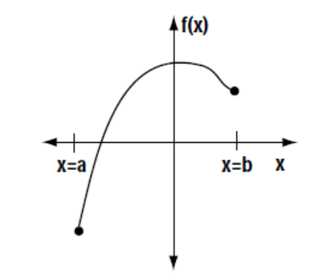

MATH 1830 Notes
Unit 3 Applications of Derivatives
3.5 Absolute Extrema
Pre-Class:
- Complete 3.4 NearPod Activity, if you did not complete it in class.
- Take notes on the videos and readings (use the space below).
- Complete the 3.5 Pre-Class Quiz.
Introduction
On the following page, each member of the group is to draw 3 functions f(x) over an interval $a < x < b$.
Be creative! Try to draw as many different possibilities as you can.
I have drawn one for you as an example.

Label each of your graphs (ex: graph #1, graph #2, etc).
For each of your graphs, answer the following questions:
-
Where does f (x) have its maximum value? That is, where on your graph does y have the largest value?
-
Where does f (x) have its minimum value?
Clearly indicate the answers to these two questions on each graph.
-
Based on your answers above, can your group arrive at a conclusion?
- Could you make a general statement about how to determine the absolute maximum or minimum values of a function over a given interval?
- Can you think of any exceptions?
- How can our knowledge of derivatives assist us?
- Summarize your responses on this sheet. Be prepared to share your results with the rest of the class.
Norris, Ken. (1999). Optimization Problems. Retrieved from https://www.stf.sk.ca/portal.jsp?Sy3uQUnbK9L2RmSZs02CjV/Lfyjbyjsxsd+sU7CJwaIY=F
Notes
Algorithm for Determining Extreme Values
Suppose that $f(x)$ is a continuous function over a closed interval [a, b].
To find the absolute maximum and minimum values of the function $f(x)$ on [a, b]:
- Find $f'(x)$.
- Determine the additional points to test in the interval [a, b].
(that is, find all x values for which $f'(x)=0$ (critical points), $f'(x)$ does not exist (possible cusps, etc.).
- Create a table for (x, y) coordinates and list all $x$ values you plan to check: the endpoints $a,$ $b,$ and all critical values, possible cusps, etc.
- Find the function values of all the $x$ values in the table.
- The largest of these values is the absolute maximum of on the interval [a, b].
- The smallest of these is the absolute minimum of on the interval [a, b].
Find the absolute minimum and maximum values of the function, if they exist, over the given interval.
-
$f(x)={{x}^{2}}-6x-3\quad \quad [-1,5]$
$ f'(x)=2x-6 $
Criticals: $f'(x)=0 $
$ 2x-6=0 $
$ 2x=6 $
$ x=3 $
Calculate $f(x)$ for the interval endpoints: ($x=-1, 5$), and critical values: ($x=3$).
$x$ $f(x)$ -1 $ 4$ 3 $ -12 $ $5$ $ -8 $ The Absolute Maximum on the interval is: $(-1, 4)$.
The Absolute Minimum on the interval is: $(3, -12)$.
-
$f(x)=2{{x}^{3}}-3{{x}^{2}}-36x+62\quad \quad [-3,4]$
$ f'(x)=6{{x}^{2}}-6x-36 $
$ 6{{x}^{2}}-6x-36=0 $
$ 6\left( {{x}^{2}}-x-6 \right)=0 $
$ 6(x+2)(x-3)=0 $
$ x=-2$, and $x=3$
Calculate $f(x)$ for the interval endpoints: ($x=-3$ and $x= 4$), and critical values: ($x=-2$ and $x=3$).
$x$ $f(x)$ -3 $ 89$
-2 $106 $
3 $-19 $
4 $-2$
The Absolute Maximum on the interval is: $(-2, 106)$.
The Absolute Minimum on the interval is: $(3, -19)$.
-
$f(x)=x+\frac{1}{x}\quad \quad [1,20]$
$ f(x)=x+{{x}^{-1}} $
$ f'(x)=1+(-1){{x}^{-2}} $
$ f'(x)=1-\frac{1}{{{x}^{2}}} $
$ 0=1-\frac{1}{{{x}^{2}}} $
$ \frac{1}{{{x}^{2}}}=1 $
$ {{x}^{2}}=1 $
$ \sqrt{{{x}^{2}}}=1 $
$ x=1\text{ and }x=-1 $
Calculate $f(x)$ for the interval endpoints: ($x=1$ and $x=-1$), and critical values: ($x=20$).
Do not include the critical value $x=-1$ because it is not in interval.
$x$ $f(x)$ $1$ $2$
$20$ $20.05$
The Absolute Maximum on the interval is: $(20, 20.05)$.
The Absolute Minimum on the interval is: $(1, 2)$.
-
$f(x)=\frac{{{x}^{2}}}{{{x}^{2}}+1}\quad \quad [-2,2]$
$ f'(x)=\frac{({{x}^{2}}+1)(2x)-{{x}^{2}}(2x)}{{{\left( {{x}^{2}}+1 \right)}^{2}}} $
$ f'(x)=\frac{2{{x}^{3}}+2x-2{{x}^{3}}}{{{\left( {{x}^{2}}+1 \right)}^{2}}} $
$ f'(x)=\frac{2x}{{{\left( {{x}^{2}}+1 \right)}^{2}}} $
$ \frac{2x}{{{\left( {{x}^{2}}+1 \right)}^{2}}}=\frac{0}{1} $
$ 2x=0 $
$ x=0 $
Calculate $f(x)$ for the interval endpoints: ($x=-2$ and $x=2$), and critical values: ($x=0$).
$x$ $f(x)$ $-2$ $0.8$
$0$ $0$
$2$ $0.8$
The Absolute Maxima on the interval are: $(2, 0.8)$ and $(-2, 0.8)$.
The Absolute Minimum on the interval is: $(0, 0)$.
-
$f(x)=\frac{x}{{{(x+9)}^{2}}}\quad \quad [-1,8]$
$ f'(x)=\frac{{{\left( x+9 \right)}^{2}}(1)-x(2)(x+9)(1)}{{{\left( x+9 \right)}^{4}}} $
$f'(x)=\frac{\left( x+9 \right)\left[ \left( x+9 \right)-2x \right]}{{{\left( x+9 \right)}^{4}}}$
$f'(x)=\frac{\left( x+9 \right)-2x}{{{\left( x+9 \right)}^{3}}}$
$f'(x)=\frac{-x+9}{{{\left( x+9 \right)}^{3}}} $
$ \frac{-x+9}{{{\left( x+9 \right)}^{3}}}=\frac{0}{1} $
$ -x+9=0 $
$ 9=x $
Calculate $f(x)$ for the interval endpoints: ($x=-1$ and $x=8$).
Do not include the critical value $x=9$ because it is not in the interval.
$x$ $f(x)$ $-1$ $-0.0156$
$8$ $0.0227$
The Absolute Maximum on the interval is: $(8, 0.0277)$.
The Absolute Minimum on the interval is: $(-1, -0.0156)$.
-
$f(x)=-3\quad \quad [-2,2]$
$f'(x)= 0$
$x$ $f(x)$ $-2$ $-3$
$2$ $-3$
There are no maximum or minimum values because this is a constant function.
-
An employee’s monthly production $M$, in number of units produced, is found to be a function of the number of year of service, $t$. For a certain product, a productivity function is given by: $M(t)=-2{{t}^{2}}+100t+180,\quad 0\le t\le 40$
Find the maximum productivity and the year in which it is achieved.
$M'(t)=-4t+100$
$ -4t+100=0$
$t=25$
Calculate $M(t)$ for the interval endpoints: ($t=0, 40$), and critical values: ($t=25$).
$t$ $M(t)$ 0 $180$
25 $1430$
40 $980$
The maximum monthly productivity is 1430 units per month in year 25 of service.
-
A firm determines that its total profit in dollars from the production and sale of x thousand units of a product is given by: $$P(x)=\frac{1500}{{{x}^{2}}-6x+10}\quad \quad x\ge 0$$
Find the number of units x for which the total profit is a maximum.
Note: this function is continuous on the interval $\left(0,\infty\right).$
$ P'(x)=\frac{\left( 0 \right)\left( {{x}^{2}}-6x+10 \right)-1500\left( 2x-6 \right)}{{{\left( {{x}^{2}}-6x+10 \right)}^{2}}} $
$ P'(x)=\frac{-3000x+9000}{{{\left( {{x}^{2}}-6x+10 \right)}^{2}}} $
$ \frac{-3000x+9000}{{{\left( {{x}^{2}}-6x+10 \right)}^{2}}}=\frac{0}{1} $
$ -3000x+9000=0$ therefore$ x=3 $
Calculate $P(x)$ for the interval endpoint: ($x=0$), and critical value: ($x=3$). Note, we were not given an upper interval endpoint. Test one point beyond $x=3$ to identify the behavior of $P(x)$ for values of $x$ greater than the critical value of $x=3$. We will use $x=5$. Your answer will not include both a maximum and a minimum because the interval is open on one end.
$x$ $P(x)$ $0$ $150$
$3$ $1500$
$5$ $300$
Because the graph is decreasing for $x$ values greater than $3$, we have an Absolute Maximum at $(3,1500)$ but no Absolute Minimum.
The profit is maximized at $1500 when 3000 units are sold.
Norris, Ken. (1999). Optimization Problems. Retrieved from https://www.stf.sk.ca/portal.jsp?Sy3uQUnbK9L2RmSZs02CjV/Lfyjbyjsxsd+sU7CJwaIY=F